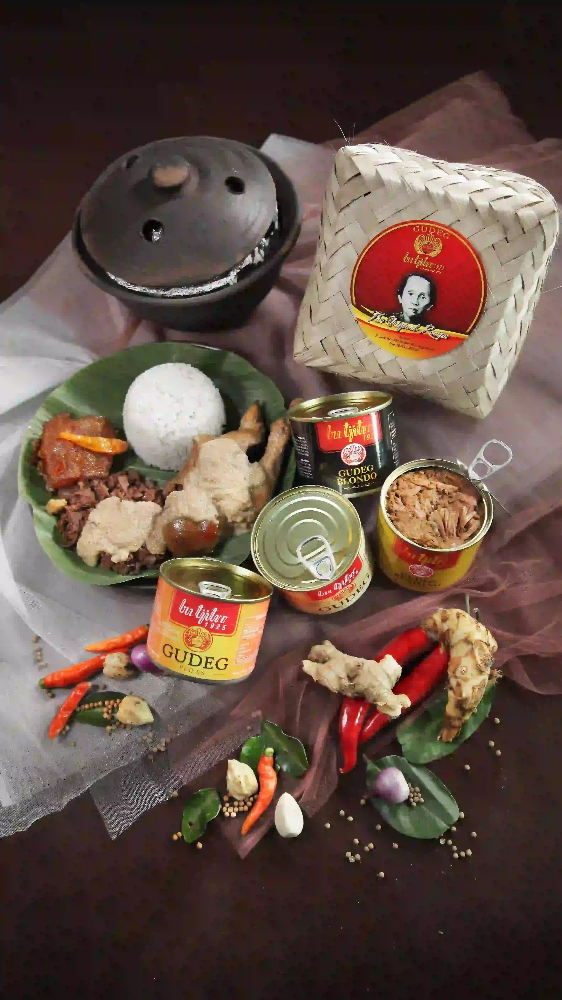

Produk Kaleng
Gudeg Bu Tjitro®
1925
Nikmati kelezatan gudeg asli Yogyakarta kapan saja, di mana saja. Praktis untuk oleh-oleh, perjalanan, atau stok di rumah, tapi tetap dengan sentuhan tradisi yang tak tergantikan.

Tahan Lama
Hingga 12 bulan
Rasa Autentik
Resep sejak 1925
Praktis Dibawa
Cocok oleh-oleh
Aman & Legal
BPOM dan Halal
Kepraktisan Modern, Cita Rasa Legendaris
Melihat dari perjalanan panjangnya, maka jangan heran bila Gudeg Bu Tjitro 1925 tidak hanya digemari oleh orang Jogja dan wisatawan lokal saja, melainkan juga digemari oleh wisatawan mancanegara yang kebetulan mampir di Kota Pelajar ini. Ide awalnya pada tahun 2004 bermula ketika kurang praktisnya membawa oleh oleh Gudeg Kendil ataupun Gudeg Besek dibawa jauh ke luar kota ataupun luar negeri sebagai oleh-oleh. Terbayang bukan betapa repotnya jika membawanya dalam perjalanan di kereta, bis, kapal, atau bahkan pesawat.
Gudeg Bu Tjitro 1925 dibawah naungan CV Buana Citra Sentosa mulai membuat inovasi kemasan lain yang lebih praktis, mudah dibawa, dan tahan lama dengan tanpa mengurangi kenikmatan cita rasa masakannya. Maka terciptalah Gudeg Kaleng Bu Tjitro 1925, yang diharapkan dapat menjadi altenatif baru oleh-oleh khas Yogyakarta dan agar dapat dinikmati konsumen kapan saja dan dimanapun berada, tidak hanya di penjuru Indonesia melainkan juga hingga mancanegara. Gudeg yang di masa Bu Tjitro hanya dapat dinikmati 6 jam dari proses pembuatan, kini dengan inovasi pengalengan dapat dinikmati konsumen hingga mancanegara. Semakin luas Gudeg Bu Tjitro menjangkau konsumen, semakin luas juga misinya memperkenalkan kuliner tradisional sebagai budaya bangsa Indonesia, khususnya budaya Yogyakarta.
Gudeg Kaleng Bu Tjitro 1925 merupakan pelopor nomor 1 munculnya gudeg komplit dalam kaleng di Indonesia bahkan di dunia. Gudeg ini telah melalui berbagai macam percobaan dan penelitian bertahun-tahun sejak 2009 hingga kini akhirnya menjadi sebuah produk gudeg yang dapat dinikmati dengan komposisi lengkap selezat Gudeg Bu Tjitro 1925 yang disajikan dalam keadaan fresh, aman dikonsumsi dan kualitasnya terjamin. Tentunya hal ini tidak luput dari peran kerjasama dengan LIPI (Lembaga Ilmu Pengetahuan Indonesia) atau saat ini yang dikenal dengan BRIN (Badan Riset dan Inovasi Nasional). Keunggulan lainnya, Gudeg Kaleng Bu Tjitro 1925 telah memiliki Nomor Ijin Edar (NIE) yang diterbitkan oleh Badan Pengawas Obat dan Makanan (BPOM), Sertifikat Halal dari Majelis Ulama Indonesia (MUI), Sertifikat HACCP (Hazard Analysis and Critical Control Points), Sertifikat Jogja Mark atau 100% Jogja yang dikeluarkan oleh Dinas Perindustrian dan Perdagangan Pemerintah Daerah Istimewa Yogyakarta.